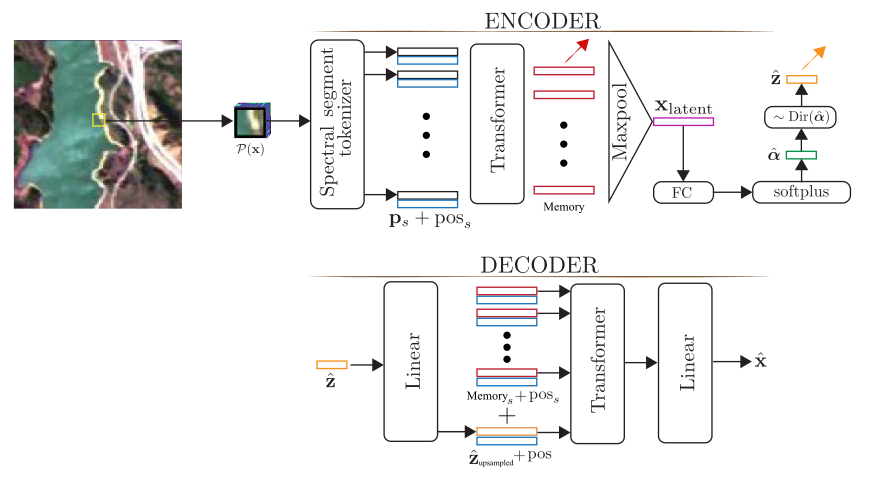
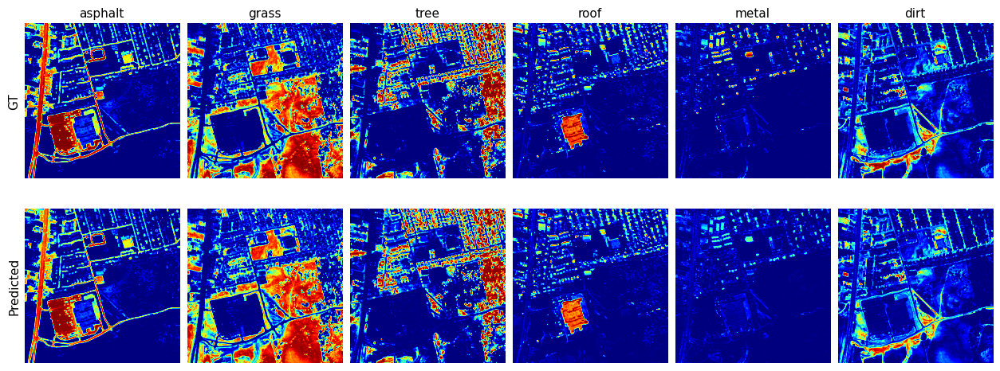
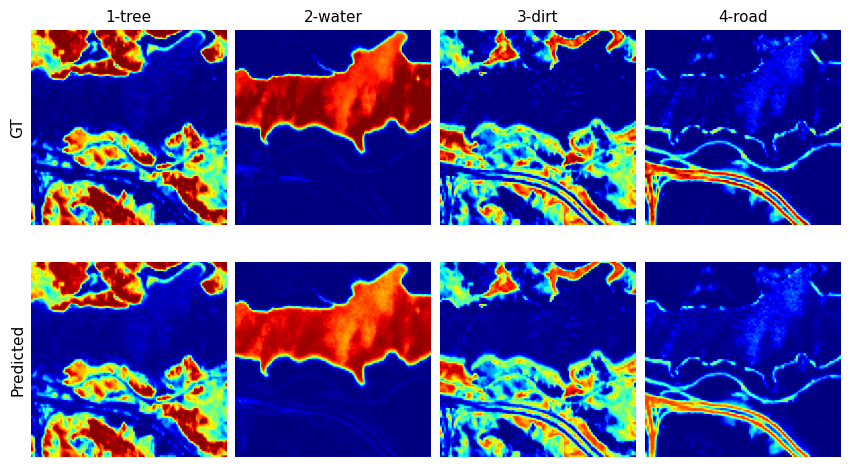
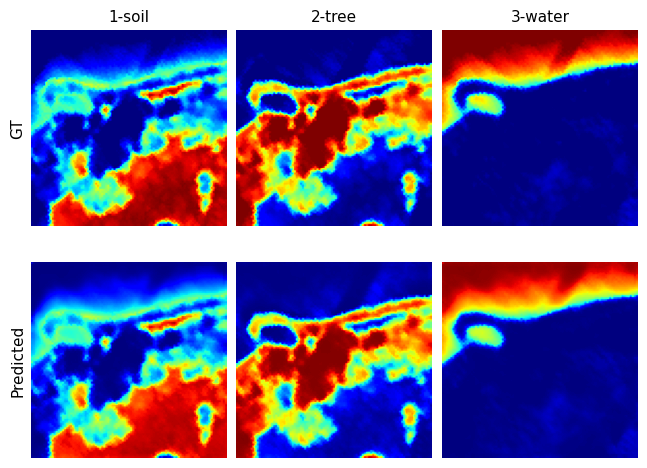
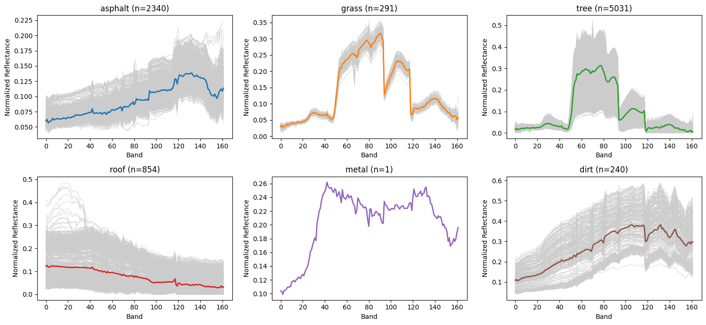
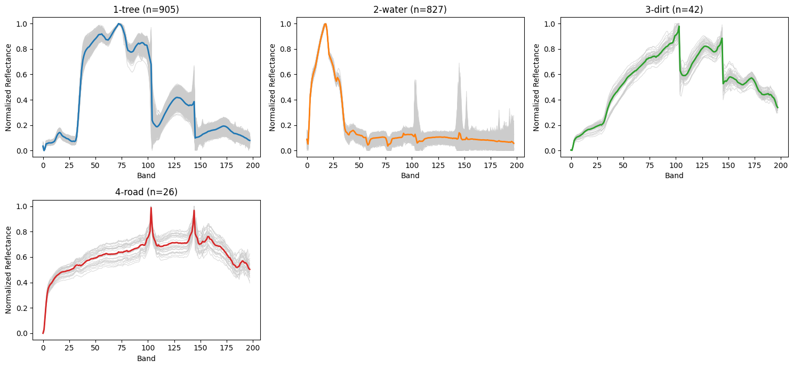
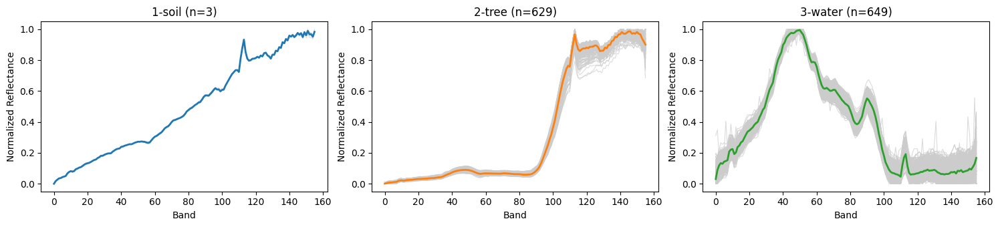

This work proposes a deep generative model and two ``stepping ston’’ models for hyperspectral unmixing that integrate transformer architectures with variational autoencoders. The proposed approach leverages self-attention mechanisms to capture global spectral–spatial dependencies within image patches, while a Dirichlet latent distribution enforces the physical constraints of abundance estimation. Building on this foundation, we introduce the Latent Dirichlet Transformer VAE (LDVAE-T), which models endmembers as distributions rather than fixed spectra, enabling the representation of intrinsic spectral variability through learned mean and covariance structures. We evaluate the proposed models on multiple benchmark datasets, including Samson, Jasper Ridge, and HYDICE Urban, and compare their performance against SOTA methods. Experimental results demonstrate improved accuracy in both abundance estimation and endmember extraction. Overall, this work presents a physically grounded and flexible framework for hyperspectral unmixing that effectively captures both global structure and material variability.




The need for modeling endmembers variability. These plots showcase the endmembers extracted from pure pixels, i.e., pixels that are dominated by a single endmember. Note how even within a single image, endmembers exhibit variation. This suggests that we need techniques and methods that explicitly model for variability in endmembers when performing pixel unmixing.



For technical details please look at the following publications